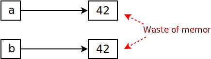
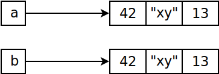
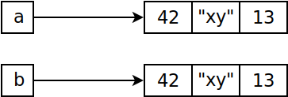

References, (Im)mutability¶
Immutability: Numbers¶
Numbers are immutable …
Object of type
intwith value 42Variable
apoints to it (“gives it a name”)The object cannot change its value - there is no method to modify an integer object
⟶ The latter situation is equivalent to the former (which is the implementation)
a = 42
b = a
|
 |
a = 42
b = 42
|
 |
Immutability: Tuples¶
Same with tuples
|
>>> a = (42, "xy", 13)
>>> b = a
   |
Mutability: Lists (1)¶
Lists are mutable …
>>> a = [1, 2, 3]
>>> b = a
>>> b
[1, 2, 3]
>>> b.append(4)
>>> b
[1, 2, 3, 4]
>>> a
[1, 2, 3, 4]
|
 |
Mutability: Lists (2)¶
Danger …
Take care when passing complex data structures
Not passed by copy (as in C++)
Passed by reference (as in Java)
Make a copy if needed
Copying a list¶
>>> a = [1, 2, 3]
>>> b = a[:]
>>> a.append(4)
>>> b
[1, 2, 3]
Shallow Copy¶
>>> a = [1, [1, 2, 3], 2]
>>> b = a[:]
>>> b
[1, [1, 2, 3], 2]
>>> a[1].append(4)
>>> a
[1, [1, 2, 3, 4], 2]
>>> b
[1, [1, 2, 3, 4], 2]
>>> a[1] is b[1]
True
|

|